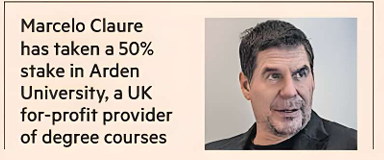

Antoine Gara — New York

Billionaire former SoftBank executive Marcelo Claure has led the purchase of a 50 per cent stake in one of the UK’s largest for-profit universities as he seeks to create a global AI-focused education group.
Brightstar Capital Partners, the US buyout group Claure joined this year, has agreed to buy the stake in Arden University for more than $1bn, according to people briefed on the deal.
Arden, which says that it has 40,000 undergraduate and graduate students in the UK, will begin offering UK-accredited degrees to full-time students globally next year.
Claure said he planned to use AI to translate Arden’s curriculum for some 140 degrees into different languages, with the aim of quickly expanding in the Middle East, Latin America and other parts of Europe, including Spain.
“AI technology allows you to basically teach a class in English and be able to deliver to many different students in over 150 different languages,” said Claure. He also expected to use AI to offer students individualised tutoring.
Claure said Arden would also seek to expand its enrolments by offering UK student visa sponsorship to foreign students for its in-person and remote-learning campuses in the UK. “We're going to be recruiting students from all over the world that want to come to the UK to have an education,” said Claure.
Arden generally focuses on professional degrees and its curriculum offers a mixture of remote and on-campus learning for up to a fifth of its classes.
Brightstar is buying its 50 per cent stake from current owner Global University Systems, a Dutch for-profit education conglomerate.
The private equity firm was founded by Andrew Weinberg, Claure’s top aide at the Latin American telecoms group he sold to SoftBank in 2014. Brightstar was also the name of this telecoms group.
Claure, who later moved to SoftBank, subsequently led the group’s efforts to merge Sprint with T-Mobile, and its international investment operations.
He left SoftBank in 2022 amid difficult talks over a pay deal. Lately he has focused on his family office, Claure Group. Claure will become chair of Arden University and plans to announce AI-focused private equity deals after joining Brightstar as a partner in April.
Brightstar manages more than $5bn in assets and has sold billions of dollars in assets for large gains.